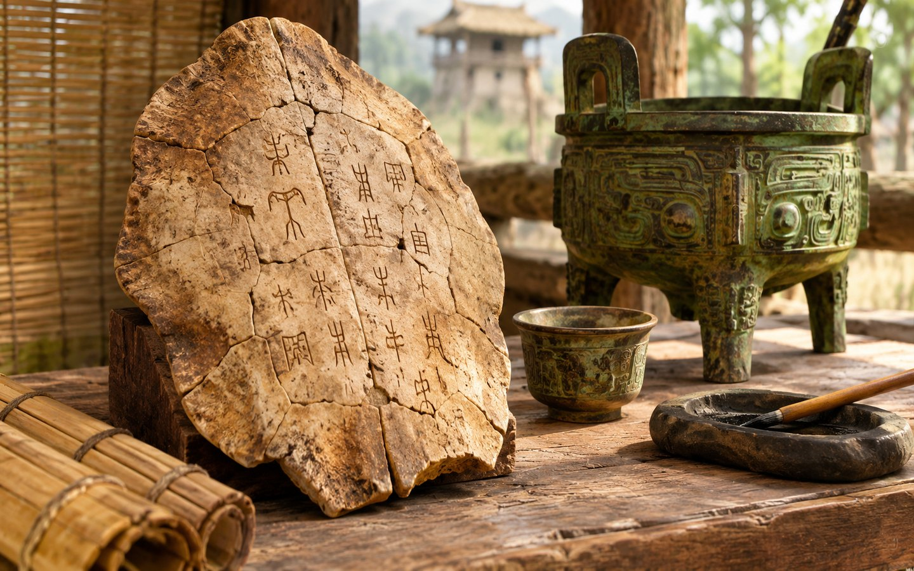

Nieuwe tradities en heilige verhalen
Van gezongen verzen en rituele beenderen tot vragen over gerechtigheid, mededogen en het goede leven. In deze vijftien eeuwen ontwikkelden zich allerlei tradities die later een grote invloed kregen — niet op één plaats en niet allemaal op dezelfde manier.

Wat verandert er in deze periode?
In het vorige deel keken we vooral naar steden, vorsten, tempels en rituelen in de bronstijd. Vanaf ongeveer 1500 v.Chr. krijgen we in verscheidene regio’s meer teksten, hoewel die zeker niet overal tegelijk verschijnen. In India worden hymnen generaties lang mondeling doorgegeven. In China schrijven hofdienaren vragen aan voorouders op botten en schildpadschilden. In het oostelijke Middellandse Zeegebied ontstaan en veranderen gemeenschappen waarvan sommige verhalen later in de Bijbel terechtkomen.
Nieuwe religies vervangen oude gebruiken niet in één dag. Vaak bestaan overtuigingen naast elkaar, nemen mensen elementen van buren over en ontstaan later uiteenlopende stromingen. Een tekst die vandaag als heilig wordt gelezen, kan bovendien een lange geschiedenis van mondelinge overlevering, bewerking en verzameling hebben. We hoeven die ontwikkeling niet als een wedstrijd tussen godsdiensten te bekijken. Het is een verhaal van mensen die op zeer verschillende manieren probeerden te leven met vragen die nog altijd herkenbaar zijn.
De Veda’s: woorden die van mond tot mond reizen
In het noordwesten van Zuid-Azië worden vanaf ongeveer 1500 v.Chr. oude hymnen in het Sanskriet gevormd en mondeling doorgegeven. Veel daarvan zijn bewaard in de Veda’s. Vooral de Rigveda bevat lofzangen die onder meer gericht zijn tot Agni (vuur), Indra en andere goddelijke machten. Deze verzen werden niet geschreven voor een modern lesboek: ze hoorden bij voordracht, offers, rituelen en het leven van groepen mensen in hun eigen tijd.
De mondelinge bewaring is bijzonder. In latere tradities leerden leerlingen klanken, ritme en woordvolgorde zeer nauwkeurig. Daardoor kon materiaal lange tijd worden doorgegeven voordat het op schrift werd vastgelegd. Dat wil niet zeggen dat we alle details van de eerste uitvoering kennen. De overgebleven teksten geven vooral zicht op degenen die ze maakten en gebruikten; ze beschrijven niet de volledige diversiteit van toenmalige samenlevingen.
Geleidelijk ontstonden ook teksten die vragen stelden over het doel van offers, over het zelf, het leven en de diepere werkelijkheid. De Upanishads, waarvan sommige vroege lagen doorgaans in het eerste millennium v.Chr. worden geplaatst, horen bij deze ontwikkeling. Wie ben ik? Wat blijft wanneer iets verandert? Wat is de band tussen mens en kosmos? Zulke vragen worden meer uitgesproken. De veelvormige tradities die wij later met de naam hindoeïsme verbinden, groeiden gedurende vele eeuwen; ze ontstonden niet in één keer door één stichter.
Om zelf over na te denken: waarom zouden mensen sommige woorden zo zorgvuldig bewaren dat ze die generaties lang blijven herhalen?
China: vragen aan voorouders en gedachten over goed bestuur
Een bijzonder venster op het late Shang-rijk is te vinden in de orakelbeenderen, vooral uit de periode rond 1200–1045 v.Chr. Een hof liet vragen over oogst, oorlog, ziekte en familie inkrassen op dierlijke schouderbladen of schildpadschilden. Door verhitting ontstonden barstjes die binnen het ritueel werden uitgelegd. Archeologen kunnen veel van deze inscripties bestuderen. Ze vertellen vooral wat voor de koninklijke omgeving belangrijk was; we kunnen er niet rechtstreeks mee vaststellen wat iedere boer of ambachtsman dacht.
In China kregen overleden voorouders in hofrituelen een belangrijke plaats. Bronzen vaten dienden voor het bereiden of aanbieden van voedsel en drank bij zulke plechtigheden. Een vat zegt daardoor iets over techniek én over de sociale betekenis van een ritueel. De datering en functie van zulke voorwerpen zijn vaak beter vast te stellen dan hun volledige symbolische betekenis.
Na de overgang naar de Zhou-dynastie rond 1046 v.Chr. groeide in de politieke overlevering het idee dat een vorst zijn gezag niet onbeperkt mocht beschouwen. Het latere begrip Mandaat van de Hemel werd verbonden met de vraag wanneer bestuur gerechtvaardigd was. In de zesde en vijfde eeuw v.Chr. leefde volgens de gebruikelijke historische datering Confucius, die nadacht over leren, voorbeeldgedrag, familiebanden, rituelen en menselijkheid. In latere eeuwen werden zijn uitspraken verzameld en telkens opnieuw besproken.
Ook teksten die aan Laozi worden verbonden, behandelen het leven in overeenstemming met de Dao of ‘Weg’. De historische identiteit en precieze datering van Laozi zijn onzeker. Het is daarom verstandiger om te spreken over de ontwikkeling van een denkstroming dan te doen alsof we de hele ontstaansgeschiedenis van één persoon kennen.
Een volk, verhalen over een verbond en de stem van profeten
Een Egyptische koningsinscriptie van omstreeks 1208 v.Chr., de stèle van Merneptah, vermeldt een groep die doorgaans als ‘Israël’ wordt gelezen. Dit is een van de oudste bekende bronnen buiten de Bijbel waarin die naam voorkomt. De stèle vertelt ons dat zo’n groep voor Egyptische schrijvers herkenbaar was. Ze bewijst op zichzelf niet hoe de groep precies ontstond en ook niet dat alle gebeurtenissen uit latere heilige verhalen historisch bevestigd zijn.
In de loop van het eerste millennium v.Chr. veranderden de gemeenschappen van Israël en Juda. Verhalen over voorouders, bevrijding, wetten, koningen en het verbond met de Ene kregen een belangrijke plaats. De tekstgeschiedenis van de Hebreeuwse Bijbel is complex: oudere overleveringen werden in verschillende perioden geschreven, bewerkt en verzameld. De Tora zoals wij die nu kennen, kwam niet als een ongewijzigd gedrukt boek uit de bronstijd voort.
De profetische boeken verbinden geloof vaak met kritiek op onrecht. Ze spreken over armen, weduwen, vreemdelingen, machtsmisbruik en de verantwoordelijkheid van leiders. Zulke woorden laten zien dat religie in deze traditie niet beperkt bleef tot tempels en offers. Wie zich op God beriep, werd ook uitgedaagd om naar het dagelijks leven en naar zijn omgang met andere mensen te kijken.
De verwoesting van Jeruzalem door Babylonië in de zesde eeuw v.Chr. en de ballingschap vormden een diepe breuk. Na de Perzische verovering van Babylon in 539 v.Chr. werd terugkeer en wederopbouw voor groepen mogelijk. Nieuwe vragen kwamen op: hoe blijf je verbonden met je traditie wanneer je thuisland, je tempel of je politieke vrijheid verandert? De geschiedenis van het jodendom groeit uit deze en vele latere ervaringen, maar heeft niet één eenvoudige startdatum.
Waarheid, verantwoordelijkheid en een rijk met vele volken
De Iraanse religieuze traditie die later bekendstaat als het zoroastrisme is verbonden met Zarathustra (Zoroaster). Zijn precieze levensperiode is omstreden. Onderzoekers hebben uiteenlopende dateringen voorgesteld, soms eeuwen uit elkaar. De oudste aan hem verbonden hymnen, de Gatha’s, worden binnen deze traditie bijzonder belangrijk gevonden. Ze benadrukken onder andere de betekenis van waarheid, juist handelen en morele keuzes.
Dit is een goed voorbeeld van het verschil tussen een overlevering en een kalenderdatum. Dat een traditie een leraar eert, betekent nog niet dat historici zijn geboortejaar precies kunnen vastleggen. Ook ‘het Perzische geloof’ was geen enkele, overal identieke praktijk. In het grote Achaemenidische rijk leefden mensen met verschillende goden, talen en gewoonten naast elkaar.
Toen Cyrus de Grote in 539 v.Chr. Babylon innam, werd zijn optreden beschreven op een kleicilinder met Babylonische koninklijke taal. De tekst spreekt over het herstellen van heiligdommen en het terugbrengen van bepaalde bevolkingsgroepen. Dat is een belangrijke historische bron, maar geen moderne verklaring van universele mensenrechten. De tekst dient ook om de macht van Cyrus te legitimeren.
Wie de bronnen vergelijkt, ziet dus zowel idealen als politieke belangen. Koningen konden zich beroepen op goddelijke steun, terwijl gewone mensen hun eigen tradities bleven beoefenen. De vraag wat ‘waarheid’ en ‘goed handelen’ betekenen, kan daarin op verschillende manieren worden gesteld.
Goden, heiligdommen en de moed om vragen te stellen
In het oude Griekenland werden vele goden en godinnen vereerd. Heiligdommen, processies, offers en feesten hoorden bij het openbare leven van verschillende stadstaten. De verhalen die wij kennen over Zeus, Athena of Apollo komen niet allemaal uit één vaste geloofsbelijdenis. Een stad kon een eigen beschermgodheid hebben, en de betekenis van een ritueel kon per plaats verschillen.
De epen die aan Homerus worden toegeschreven, kregen vanaf ongeveer de achtste eeuw v.Chr. een grote culturele invloed. Tegelijk bleven verhalen veranderen wanneer mensen ze zongen of navertelden. In Griekse heiligdommen zijn talloze voorwerpen gevonden die als dank of als verzoek aan goden werden aangeboden. De vondsten vertellen ons iets concreets over praktijk en devotie, maar niet altijd over wat elke deelnemer geloofde.
Vanaf de zesde en vijfde eeuw v.Chr. werden in de Griekse wereld ook steeds openlijker vragen gesteld over natuur, kennis en het goede leven. Socrates is vooral bekend via teksten van anderen, onder wie Plato. De methode van vragen stellen kon mensen aan het denken zetten over vanzelfsprekende regels. Het ging niet simpelweg om ‘religie tegenover wetenschap’: één samenleving kon tegelijk heiligdommen bouwen en scherp discussiëren over waarheid, politiek en recht.
Na de veroveringen van Alexander in de vierde eeuw v.Chr. nam de uitwisseling van Griekse en andere culturele tradities in grote gebieden toe. In de hellenistische wereld ontstonden invloedrijke filosofische scholen, zoals de Stoa en de school van Epicurus. Ze verschilden van mening over het geluk, het lot, deugd en het omgaan met verdriet. Ook dat is levensbeschouwing: proberen te begrijpen hoe een mens goed kan leven.
Boeddhisme en jaïnisme: omgaan met lijden en geweld
In Noord-India ontwikkelden zich in het eerste millennium v.Chr. naast Vedische en brahmaanse tradities andere bewegingen. Het boeddhisme wordt verbonden met Siddhartha Gautama, de Boeddha, en het jaïnisme met Mahavira, een leraar in een oudere bredere traditie van asceten. De precieze chronologie van hun levens is niet helemaal zeker; veel historische overzichten plaatsen hen in of rond de vijfde eeuw v.Chr.
In de boeddhistische tradities staat de vraag centraal hoe lijden ontstaat en hoe mensen ermee kunnen omgaan. Begrippen als aandacht, mededogen en het vermijden van schadelijk handelen krijgen een belangrijke plaats. Het jaïnisme staat bekend om de sterke nadruk op ahimsa, geweldloosheid tegenover levende wezens. Hoewel de tradities raakvlakken hebben, zijn hun ideeën niet hetzelfde; elk heeft zijn eigen teksten, rituelen en ontwikkeling.
In de derde eeuw v.Chr. regeerde Ashoka over een groot deel van het Indische subcontinent. Zijn rots- en zuilinscripties zijn tastbare historische bronnen. Ze laten zien hoe een heerser zijn ideeën over moreel gedrag, zorg en bestuur publiek bekendmaakte. Dat we zijn inscripties kunnen lezen, maakt hem historisch beter zichtbaar dan figuren die hoofdzakelijk uit latere levensverhalen bekend zijn. Tegelijk weerspiegelt zijn boodschap ook de positie van een koning.
Deze ontwikkelingen laten zien dat een religieuze traditie niet alleen kan draaien om de vraag wie of wat het goddelijke is. Ook de vraag hoe verminder ik mijn eigen schadelijk gedrag? kan richting geven aan een heel leven.
Monumenten, symbolen en heilige plaatsen aan de andere kant van de oceaan
Terwijl in Europa, Azië en het Nabije Oosten nieuwe teksten en stromingen ontstonden, bouwden mensen in Amerika hun eigen rituele en maatschappelijke werelden. Er is geen reden om die geschiedenis als een voetnoot bij de ‘oude wereld’ te behandelen. In het huidige Mexico ontwikkelde zich tussen ongeveer 1200 en 400 v.Chr. de Olmeekse kunsttraditie. Grote stenen hoofden, fijn bewerkte voorwerpen en complexe beeldmotieven wijzen op gemeenschappen met krachtige symbolische uitdrukkingsvormen.
Een figuur met dierlijke of plantaardige kenmerken kan een bovennatuurlijke verwijzing dragen. Maar omdat niet alle betekenissen in geschreven teksten zijn overgeleverd, moeten historici voorzichtig blijven met uitspraken als ‘dit was hun enige god’ of ‘dit was precies hun geloof’. Kunst, ritueel en politieke macht liepen wellicht samen, maar het beschikbare bewijs is niet bij elk voorwerp even duidelijk.
In de Andes, in het huidige Peru, werd Chavín de Huántar een belangrijk ceremonieel centrum. UNESCO beschrijft er terrassen, pleinen, onderaardse gangen en afbeeldingen van menselijke en dierlijke vormen. De bredere Chavín-traditie wordt ongeveer tussen 1500 en 300 v.Chr. geplaatst. De site verbond verschillende groepen en gebieden; dat blijkt uit de architectuur en gedeelde symboliek. De precieze belevenis van afzonderlijke bezoekers kunnen we natuurlijk niet meer rechtstreeks vragen.
De kern is niet dat mensen overal hetzelfde geloof hadden. Integendeel: we zien een wereld vol afzonderlijke antwoorden op vragen over natuur, leven, dood, verbondenheid en macht — en vele antwoorden die we nog niet goed kunnen reconstrueren.
Een wereld met steeds meer ontmoetingen
Vanaf ongeveer 300 v.Chr. maakten grotere rijken, handelscontacten en migraties het mogelijk dat ideeën in nieuwe omgevingen terechtkwamen. De hellenistische wereld bracht bijvoorbeeld Griekse taal en cultuur in contact met oudere gemeenschappen van Egypte tot delen van Azië. In India verspreidden boeddhistische teksten en praktijken zich langs verschillende routes. In de Levant en daarbuiten bestonden Joodse gemeenschappen die tradities deelden, maar ook verschillend dachten over de juiste uitleg van wet en geloof.
Daarbij bestond geen wereldwijde eenheid van religie. Een uitwisseling is niet hetzelfde als een volledig samensmelten. Ook konden mensen tegenover nieuwe ideeën staan met nieuwsgierigheid, afwijzing of een combinatie daarvan. Niet elke ontmoeting verliep vreedzaam: rijken oefenden soms grote druk uit op bevolkingsgroepen. De geschiedenis is dus geen eenvoudig verhaal waarin iedereen met de tijd automatisch toleranter werd.
Wanneer onze jaartelling begint, zijn veel religieuze en filosofische stromingen al eeuwen in ontwikkeling. De eerste eeuw n.Chr. brengt opnieuw belangrijke gebeurtenissen en veranderingen. Dat wordt het volgende afzonderlijke hoofdstuk van deze tijdlijn. We behandelen de opkomst van het christendom pas daar, binnen de Joodse en Romeinse context van die tijd, en later de opkomst van de islam op de plaats waar die chronologisch thuishoort.
Wat staat vast, en waar blijft ruimte voor vragen?
Rechtstreeks aantoonbaar: orakelbeenderen, bronzen rituele vaten, de stèle van Merneptah, Perzische koningsinscripties, Griekse tempels, inscripties van Ashoka, Olmeekse sculpturen en het heiligdom van Chavín zijn echte bronnen. Ze kunnen onderzocht en vergeleken worden.
Historische reconstructie: de dateringen van tekstlagen, de verhouding tussen verschillende geloofstradities en hun verspreiding berusten op vergelijkend onderzoek. Niet alle wetenschappers komen bij iedere vraag tot dezelfde conclusie.
Geloof en levensbeschouwing: of een religieuze leraar werkelijk een openbaring ontving, of de Schepper achter gebeurtenissen handelde, en hoe iemand vandaag moet leven, zijn vragen die niet uitsluitend met een opgraving beslist kunnen worden. Mensen mogen daar verschillend over denken.
Bij Lichtpunt houden we daarom ruimte voor kennis, twijfel, eerlijke vragen en respect. Je hoeft de overtuiging van de ander niet over te nemen om iets van zijn geschiedenis te leren.
In deze les ontmoetten we gezongen hymnen, een boodschap van profeten, rituelen voor voorouders en denkers die nadachten over geweldloosheid en het goede leven. Welke vraag uit deze tradities zou jij vandaag aan iemand uit een andere overtuiging willen stellen? En hoe zou je luisteren als het antwoord heel anders is dan wat jij zelf denkt?
Je antwoord wordt op dit toestel bewaard; met je account kan het synchroniseren.
Met je Lichtpunt-account kan het vinkje op meerdere toestellen worden bewaard.
Historische bronnen en verder lezen
Deze links leiden naar musea, erfgoedorganisaties en vakpublicaties. De inhoud hierboven is een zelfstandige Nederlandstalige uitleg, geen kopie van de bronnen. Sommige dateringen blijven bij benadering.
- The Metropolitan Museum of Art — Zuid-Azië, 2000–1000 v.Chr. (Vedische traditie en overgang na de Indusbeschaving).
- The Met — Zuid-Azië, 1000 v.Chr.–1 n.Chr. (Upanishads, boeddhisme, jaïnisme en Ashoka).
- Smithsonian National Museum of Asian Art — Shang-dynastie (voorouders en orakelbeenderen).
- The Met — China, 2000–1000 v.Chr. (Shang, Zhou, rituele bronzen).
- Posen Library — Stèle van Merneptah (vroegste externe vermelding van Israël).
- The Met — Cyrus Cylinder and Ancient Persia (Perzisch rijk en Babylonische koninklijke taal).
- Encyclopaedia Iranica — Goštāsp (verschillende dateringen van Zarathustra).
- The Met — Greek Gods and Religious Practices (heiligdommen, offers en Griekse goden).
- The Met — Intellectual Pursuits of the Hellenistic Age (filosofie en cultuur na Alexander).
- The Met — Olmec Art (kunst, monumenten en symbolen in Meso-Amerika).
- UNESCO — Chavín (Archaeological Site) (ceremonieel centrum in Peru).